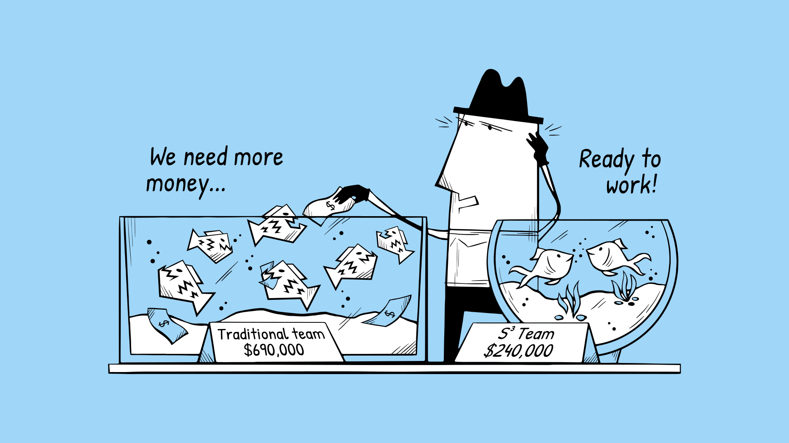

Coming from a background in competitive programming, one of my first experiences working in a team was at 18. I joined a team with another competitive programmer, where we created a solid set of computer science problems for https://konkurs.musala.com, which later evolved into https://codeit.bg. Although we had been competition to each other only a few months prior, I can honestly say that we collaborated well and did a great job. In fact, it was our idea to completely rewrite the backbone grader for what became codeit.bg. While we often debated how to improve things, I believe these constructive disagreements—when done with a respectful tone—are a powerful driver of progress.
For someone who came from the 'lone wolf' to the teamwork world, this experience was a real shift—it taught me valuable lessons about teamwork. Sometimes, all it takes is one or two highly motivated people to accomplish what a whole team might not. During this time, we were also working on a brand new Joomla-based platform that we heavily modified to support IT leadership courses, launched by Musala Soft and the Faculty of Mathematics and Informatics at Sofia University. It was my first experience working closely with a graphic designer, side by side. Honestly, it was fascinating and gave me deep insights into the different roles within a development team. To this day, I still think that this exact designer is one of the best I’ve worked with.
After 17 years and countless start-ups along the way, I still believe there’s a fundamental flaw in how most start-ups build their teams. Many founders follow trends, read a few HR-focused books, and repeatedly fall into the same traps, often creating underperforming teams or toxic environments. Almost all of these books are written by university researchers or by authors with backgrounds in large corporations. Applying these corporate-centric HR techniques in a start-up setting often sets the stage for a spectacular failure. Here are some of the most frapant mistakes:
Don't get me wrong—the current situation isn’t solely the founders' fault. The flood of money into the tech bubble drew in many wannabe "specialists" who joined the sector purely for the financial rewards. Bringing these types into your start-up can spell disaster, especially for "deep tech" ventures that rely on people with truly technical expertise to survive. Fortunately it seems that the era of easy paychecks is over.
We've seen a remarkable surge in personnel automation, driven largely by the rise of general-purpose AI. As more jobs become automated, organizations are achieving higher levels of efficiency. However, many start-ups continue to operate using traditional approaches, overlooking these emerging trends. This creates a key challenge for tech start-ups: should they embrace automation to minimize staffing, cut costs, preserve resources, and potentially enhance quality? Or should they stick to the traditional model of building a full team and relying on established methods, hoping this will lead to success?
At S³ Team, we’ve embraced the future of technology by designing our system to help start-ups operate with even fewer personnel. Combined with the latest advancements in AI, we believe we’ll soon see one-person Unicorns becoming a reality.
To put it into perspective, without our system, you would typically need a team of 2 Cloud Engineers, 2 DevOps Engineers, and 2 Front-End Developers to keep everything running smoothly. Based on current US salary averages, that means budgeting around 2 x $120,000 + 2 x $110,000 + 2 x $115,000, totaling $690,000 for the first year. Otherwise, you may have to compromise on product quality, team coverage, and overall effectiveness—all factors that could jeopardize your startup’s success.
With our platform, you’d only need two (or in case of solopreneurs just yourself) full-stack developers — equating to $240,000 (2 x $120,000) — for nearly triple the cost savings alone. Plus, you get a thoroughly tested platform with built-in cloud-native design patterns and even more coming on the way. With a traditional setup, you often wait for your team to develop your cloud-native APIs and infrastructure, which wastes time and slows you down aka losing important for your start-up tempo and agility.
In contrast, our platform streamlines collaboration, helping your team conserve resources, bypass typical team-building obstacles, and accomplish more without the usual limitations of conventional team structures.
Feel free to share your comments and suggestions via email at gospodin@bodurov.net.
You have a start-up? We can help!